- NB: I set
par(xaxt = 'n', yaxt = 'n')to remove clutter
library(anim.plots) anim.plot(1:5, 1:5, col = "green")
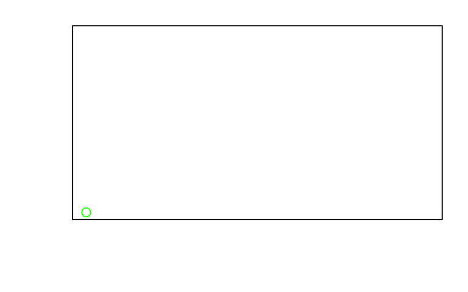
13/05/2017
par(xaxt = 'n', yaxt = 'n') to remove clutterlibrary(anim.plots) anim.plot(1:5, 1:5, col = "green")
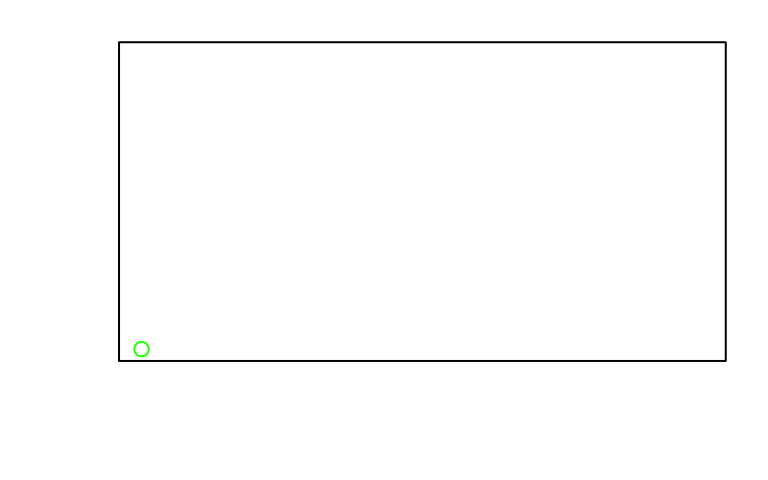
times controls the framesx <- rep(1:100/10, 20) times <- rep(1:20, each = 100) # twenty frames with 100 points each y <- sin(x*times/4) anim.plot(x, y, times = times, type = "l", col = "orange", lwd = 2)
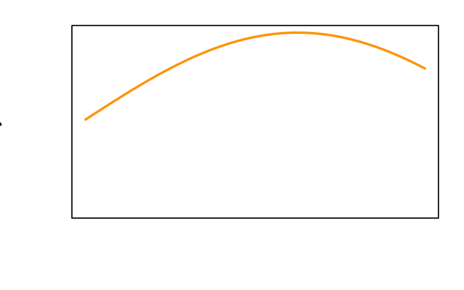
window:symbs <- anim.plot(rep(1:10, 2), rep(2:1, each = 10), window = 1:t, pch = 1:20, ylim = c(0,3), cex = 2,
col = 1:5, xlab = paste("Plot symbols", 1:20))
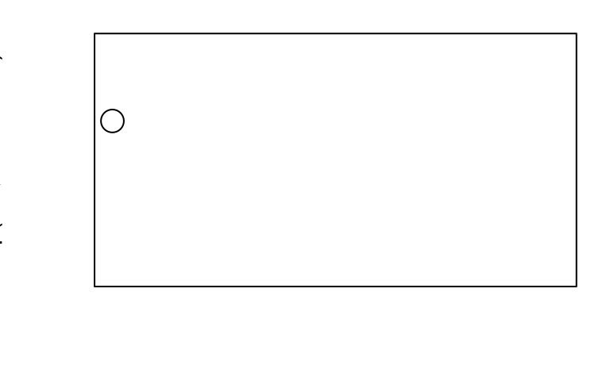
x <- rnorm(4000); y<- rnorm(4000)
x <- rep(x, 40); y <- rep(y, 40)
xlims <- 4*2^(-(1:40/10))
ylims <- xlims <- rbind(xlims, -xlims)
anim.plot(x, y, times=40, xlim=xlims, ylim=ylims, col=rgb(0,1,.5,.3), pch=19,
xaxt = 'n', yaxt = 'n')

window again:## discoveries 1860-1959
xlim <- rbind(1860:1959,1870:1969)
anim.plot(1860:1959, discoveries, times = 1:100, xlim = xlim, col = "red",
xaxp = rbind(xlim, 10), window = t:(t+10), type = "h", lwd = 8,
xaxt = "s", yaxt = "s")
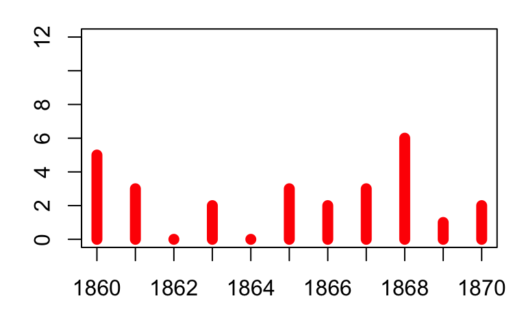
data(ChickWeight)
ChickWeight$chn <- as.numeric(as.factor(ChickWeight$Chick))
tmp <- anim.plot(weight ~ chn + Time, data = ChickWeight, col = as.numeric(Diet),
pch = as.numeric(Diet))
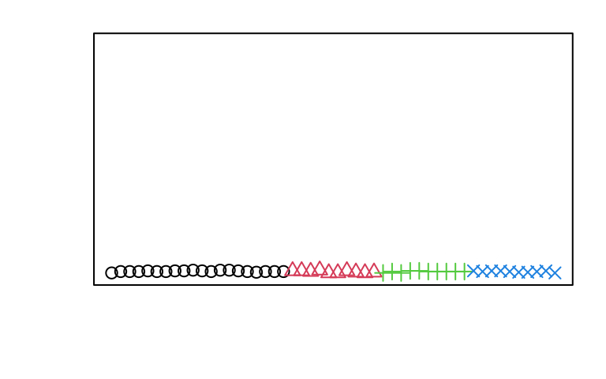
replay with before and after:replay(tmp, after = legend("topleft", legend = paste("Diet", 1:4), pch = 1:4,
col = 1:4, horiz = TRUE))
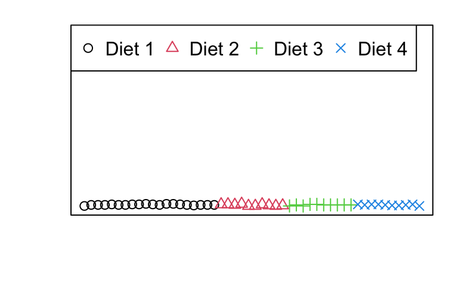
anim.hist(rep(rnorm(5000), 7), times = rep(1:7, each = 5000),
breaks = c(5, 10, 20, 50, 100, 200, 500, 1000), main = "Normal distribution")
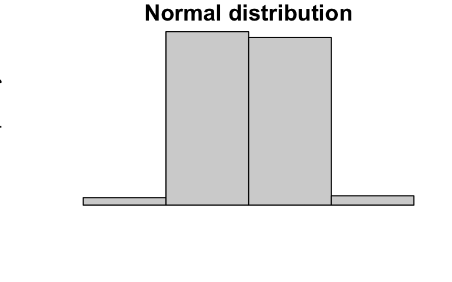
anim.curve(x^t, times = 10:50 / 10, n = 20)
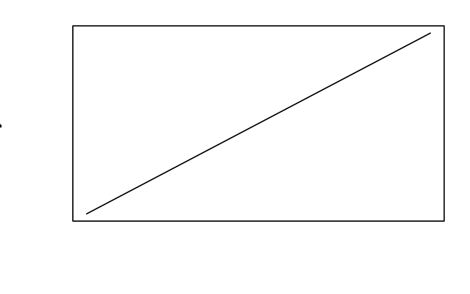
anim.contour(z = cplot, times = 1:20, levels = 80 + 1:12 * 10, lty = c(1, 2, 2))
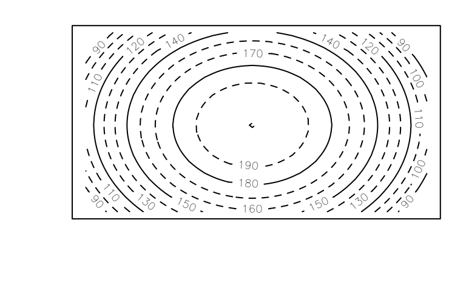
par(mar = rep(0, 4))
anim.persp(z = cplot2, times = 1:20, xlab = "", ylab = "", zlab = "Height", phi = 45,
theta = 30, speed = 5, border = NA, r = 3, col = "yellowgreen",
shade = .5, box = FALSE)
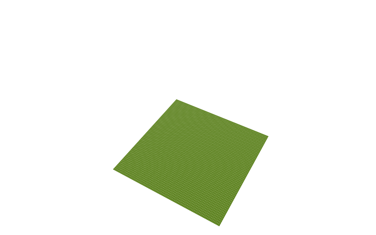